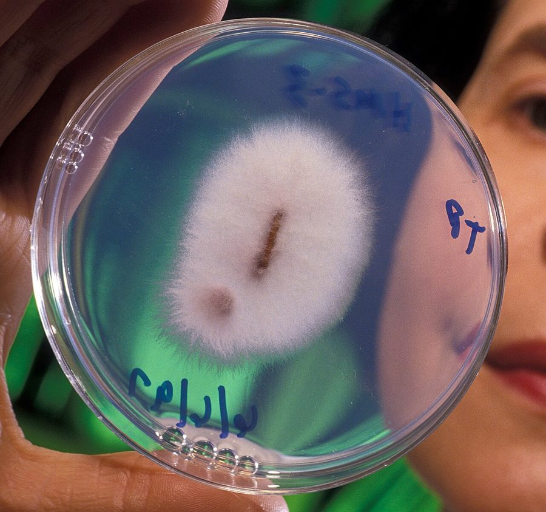

उकठा रोगFusarium Wilt
Fusarium oxysporum · Nectriaceae · FNG-0031

- Scientific name वैज्ञानिक नाम
- Fusarium oxysporum Schlechtend.
- Family कुल
- Nectriaceae
- Hindi हिंदी
- उकठा रोग
- Local names स्थानीय नाम
- uktha, ukatha rog, fusarium wilt, wilt
- Status here यहाँ की स्थिति
- native
- Movement आवागमन
- Resident, here all year
- Known from कहाँ दर्ज
- Others have published records from the wider Awadh–Purvanchal plain, none yet from Basti–Ayodhya अवध–पूर्वांचल से दूसरों के प्रकाशित अभिलेख, बस्ती–अयोध्या से अभी नहीं
- IUCN IUCN
- not evaluated
- Review समीक्षा
- audited and independently read
When to look कब देखें
Present all year. साल भर मौजूद।
Tell it apart from इनसे अलग पहचानें
उकठा रोग / Fusarium Wilt
Fusarium oxysporum Schlechtend. — Nectriaceae
उकठा रोग — ज़मीन की सबसे आम और खतरनाक बीमारी। सोयाबीन, अरहर, मटर, टमाटर, बैंगन, सब्ज़ियों, तेलों के पेड़ों — सब में होता है। पौधे की जड़ों से रोग शुरू होता है। संक्रमित पौधे पहले पीले हो जाते हैं, फिर मुरझा जाते हैं। तने को काटो तो अंदर का ऊतक भूरा-लाल रंग का दिखता है। ज़मीन में यह रोग साल भर रहता है। रोग का कोई इलाज नहीं। सिर्फ प्रतिरोधी किस्मों, बीज का उपचार, और ज़मीन की सफाई से बचा जा सकता है। पूर्वी उत्तर प्रदेश में अरहर में यह सबसे बड़ा नुकसान करता है।
Quick Identification त्वरित पहचान
| Feature | Description |
|---|---|
| Early symptoms | Wilting of one or more branches while rest of plant remains green; yellowing of leaves on infected branch |
| Progressive wilt | Gradual spread to rest of plant; plant finally wilts completely and dies |
| Vascular discolouration | Cut the stem near soil level: interior shows brown or reddish-brown discolouration of vascular tissue (xylem); may see pink fungal growth |
| Root symptoms | Roots appear dark, rotted; may be invaded by secondary organisms |
| Fungal growth | Pink or white mould may be visible on infected tissue under moist conditions |
| Timing | Can occur at any growth stage; most obvious when plant is stressed (heat, drought) |
Field tip: Fusarium Wilt is recognized by the sudden wilting of one or more branches while the rest of the plant looks healthy, followed by gradual death of the entire plant. The key sign is the brown or reddish discolouration of the vascular tissue inside the stem. Cut several diseased plants from a suspect field and examine the stem interior. This disease affects many crops.
हिंदी — कैसे पहचानें: पत्तियाँ पीली पड़ जाती हैं। पौधा मुरझा जाता है। तने को काटो तो अंदर भूरा या लाल रंग। जड़ें काली, सड़ी हुई।
Morphology and Symptomatology आकृति और लक्षण
Fungal structures (visible with microscope):
| Structure | Appearance |
|---|---|
| Microconidia | Small, oval, single-celled, 5–12 × 2–3 µm; produced in flask-shaped structures (phialides) |
| Macroconidia | Large, curved, boat-shaped, 3–5 septate (cells), 25–50 × 4–6 µm; most diagnostic |
| Chlamydospores | Thick-walled resting spores; produced within mycelium; allow fungus to survive in soil for years |
| Mycelium | White to pink, woolly; grows in vascular tissue and on culture media |
Disease progression:
- Infection: Spores germinate at root surface or enter through small wounds; fungus penetrates root tissue.
- Colonization: Fungus spreads into vascular system (xylem); blocks water movement.
- Early symptoms: Yellowing of leaves on infected side; wilting of one branch while rest is green.
- Advanced symptoms: Gradual spread; entire plant yellows and wilts; often dies.
- Death: Plant dies; fungus produces resting spores (chlamydospores) in plant tissue and soil.
Vascular discolouration: Cut stem near soil level; xylem vessels show brown or reddish-brown discolouration. This is pathognomonic (diagnostic) for Fusarium Wilt.
Life Cycle / Phenology जीवन चक्र
General pattern (varies by crop and climate):
| Stage | Event | Notes |
|---|---|---|
| Year-round in soil | Resting spores (chlamydospores) survive in soil indefinitely | Primary inoculum source; can survive 10+ years |
| Planting season | Spores germinate when plant roots are in contact with soil; infection begins at root tips | Germination is triggered by root exudates |
| Early growth (0–4 weeks) | Fungus colonizes root tissue; spreads into vascular system; no external symptoms | Silent phase; farmer unaware |
| Mid-growth (4–12 weeks) | Symptoms appear: yellowing, wilting; fungus has colonized vascular tissue; water flow reduced | Most visible phase |
| Late growth to death (8+ weeks) | Plant completely wilts and dies; fungus produces chlamydospores | Inoculum increases in soil for next season |
| After harvest | Plant residue incorporated; fungus survives in residue and soil | Spores persist for years, even without host |
Timing by crop (eastern UP):
- Chickpea (rabi, sown October): Disease peaks January–March
- Pigeonpea (kharif, sown May–June): Disease peaks August–September
- Soybean (kharif, sown June–July): Disease peaks July–September
- Tomato/Vegetables (spring, sown February): Disease peaks April–May
Ecology and Substrate पारिस्थितिकी और आधार
Obligate plant pathogen: Fusarium oxysporum requires plant tissue for completion of lifecycle but survives as resting spores in soil and residue.
Temperature requirements:
- Optimal infection: 20–28°C; varies by formae speciales
- Rapid colonization: Occurs fastest at 24–28°C, particularly in warm seasons
- Spore germination: Triggered by root exudates and moisture; occurs at 15–30°C
- Survival: Chlamydospores survive at all temperatures, including freezing
Moisture and soil conditions:
- Optimal: Moist soil favors spore germination and infection
- Stress: Dry soil and plant water stress increase severity (wilting is more pronounced in drought)
- pH: Favored at pH 5.5–7.5
Host range: Fusarium oxysporum has numerous formae speciales (host-specific races). Major types:
- f. sp. ciceri — chickpea
- f. sp. ciceris — chickpea
- f. sp. lini — linseed
- f. sp. udum — pigeonpea
- f. sp. lycopersici — tomato
- f. sp. tracheiphilum — cowpea
Each formae specialis primarily attacks its host but may cause problems in other plants.
Transmission:
- Soil-borne (primary): Chlamydospores survive in soil for years
- Seed-borne (secondary): Spores may contaminate seed; rarely the primary source
- Plant residue: Fungus survives in dead plant tissue; residue left in field is a major inoculum source
- Water: Spores are splash-dispersed and water-borne
Agricultural / Human Relevance कृषि प्रासंगिकता
Economic impact:
- Yield loss: can be heavy in a bad season, depending on variety, timing and weather.
- India context: Fusarium Wilt causes annual losses of billions of rupees, particularly in pigeonpea (arhar), chickpea, and other legumes. In eastern UP, pigeonpea wilt is a major constraint to production.
- No cure: Unlike many fungal diseases, Fusarium Wilt has no cure once the plant is infected.
Management — in order of priority (NO CURE; PREVENTION ESSENTIAL):
- Resistant varieties (MOST EFFECTIVE):
- Pigeonpea: ICPL 87119, ICPL 20096, Asha (resistant to wilt)
- Chickpea: JG 11, JG 315 (resistant to wilt)
- Tomato: Hisar Arun (resistant to f. sp. lycopersici)
- Farmer should use certified seed of resistant varieties; this is the primary control measure
- Crop rotation (ESSENTIAL):
- Rotate to non-host crops (cereals, vegetables not susceptible to that particular formae specialis)
- Even 3–4 years rotation reduces soil inoculum levels
- Do NOT plant the same crop consecutively on the same field
- Soil management and sanitation:
- Crop residue removal: Remove and burn or bury plant residue after harvest; do not leave in field
- Field sanitation: Clean tools and equipment; do not move infected soil between fields
- Solarization (in some cases): Covering soil with clear plastic in summer heat can reduce inoculum, but is expensive
- Organic matter: Adding organic matter and beneficial microorganisms may suppress disease (biological control)
- Seed treatment (SUPPLEMENTARY):
- Trichoderma or Bacillus subtilis: Biological treatment of seed can suppress seed-borne spores and provide some soil protection
- Carbendazim: Chemical seed treatment may help but does not substitute for resistant varieties and crop rotation
- Agronomic practices:
- Irrigation management: Avoid water stress; provide adequate irrigation (water-stressed plants are more susceptible)
- Spacing and sanitation: Adequate spacing reduces secondary spread; remove diseased plants from field
- Planting time: In some cases, planting at different times can avoid peak disease pressure
- Integrated approach for farmers (CRITICAL):
- Primary control: Use resistant variety; plant on field with no history of wilt or rotated land
- Secondary control: Remove crop residue; treat seed with Trichoderma; rotate crops
- Monitoring: Scout field regularly; remove and destroy diseased plants immediately
- Record-keeping: Keep records of which fields have had wilt; avoid replanting those fields
Government support:
- Extension services promote resistant varieties
- Subsidies for certified seed available in some states
Expected Locally स्थानीय रूप से अपेक्षित
Not a field record. Written from published accounts for eastern Uttar Pradesh. No confirmed local sighting yet — if you have seen it, that is what the atlas needs.
अभी तक स्थानीय पुष्टि नहीं। यह विवरण प्रकाशित स्रोतों से है, किसी अवलोकन से नहीं।
Fusarium Wilt is expected in all crop fields in Basti and Ayodhya districts. Disease incidence varies with:
- Crop and variety: Susceptible pigeonpea and chickpea varieties show heavy damage; resistant varieties show much less
- Soil history: Fields with previous wilt history or no rotation show high disease
- Season and weather: Warm season (May–September) and water-stressed conditions favor disease
In most years, particularly in pigeonpea, disease is a significant problem in farmers' fields, especially in fields without crop rotation.
Distribution वितरण
Global range: Found in all temperate, tropical, and subtropical regions; one of the most damaging plant pathogens worldwide.
In India: Present in all crop-growing states; endemic in legume-growing regions.
In Uttar Pradesh: Common in all districts; eastern UP experiences high disease pressure in pigeonpea and chickpea.
In Basti district / eastern UP: Expected in pigeonpea, chickpea, and vegetable fields; disease severity depends on variety and crop rotation history.
Research Questions शोध प्रश्न
- In your village, what percentage of pigeonpea and chickpea plants show wilt symptoms? / आपके गाँव में कितने प्रतिशत अरहर और चने के पौधों में उकठा है? — Survey 10 farmers; examine 10 plants per field; record wilt percentage.
- Do farmers who plant resistant varieties show less wilt than those who plant susceptible varieties? — Compare two farmers (one with resistant, one with susceptible); measure wilt percentage.
- Do farmers who rotate crops show less wilt than those who plant the same crop every year? — Compare fields with and without rotation.
- If crop residue is completely removed from a field, does wilt decrease in the next year? — Implement residue removal on two fields; compare disease levels in the next crop.
- Which villages have the highest wilt incidence, and what are their crop rotation and variety practices? — Survey multiple villages; document relationships.
Similar Species मिलती-जुलती प्रजातियाँ
| Disease | How to tell apart | हिंदी |
|---|---|---|
| Bacterial Wilt (Ralstonia solanacearum) | Plant wilts quickly (1–2 days); no vascular discolouration inside stem; ooze from cut stem; different hosts | जीवाणु उकठा — बहुत जल्दी; तने में रंग नहीं |
| Verticillium Wilt (Verticillium dahliae) | Similar symptoms; vascular discolouration; but slower; affects different crops (cotton, tomato); diagnostic is microscopic spore morphology | वर्टिसिलियम उकठा — धीमा; अलग पौधे |
| Drought stress or wilting | Plant recovers after irrigation; no vascular discolouration; no fungal growth | सूखा तनाव — सिंचाई से ठीक |
Field rule: Progressive wilting of one or more branches, with brown or reddish-brown vascular discolouration inside the stem, with no recovery, is Fusarium Wilt. The disease is permanent and fatal to that plant.
Taxonomy & Classification वर्गीकरण
Original description. Described by Schlechtendal. The species epithet oxysporum means "sharp-spored" in Greek, referring to the pointed ends of the macroconidia.
Subspecies (Formae speciales): Many, each attacking specific hosts:
- f. sp. udum — pigeonpea
- f. sp. ciceri — chickpea
- f. sp. lycopersici — tomato
- f. sp. lini — linseed
- f. sp. tracheiphilum — cowpea
Family and order placement. Order Hypocreales, family Nectriaceae. Fusarium is a large genus of plant pathogens and soil fungi.
Phylogenetic notes. Fusarium oxysporum is one of the most well-studied plant pathogens; it has numerous races and subspecies that have been studied extensively.
IUCN status rationale. Not evaluated. As an obligate plant pathogen, conservation status is not applicable.
Photo Gallery फोटो गैलरी
Photos needed आवश्यक फोटो
- [ ] Wilted plant showing one or more branches affected
- [ ] Whole diseased plant compared to healthy plant
- [ ] Stem cross-section showing brown vascular discolouration
- [ ] Diseased roots (dark, rotted)
- [ ] Pink fungal growth on infected tissue (if visible)
No photos yet — add field photos to media/species/fusarium_wilt/ and run node scripts/sync_photos.js.
References संदर्भ
- Schlechtendal, D.F.L. von (1824). Diarienflora. Berlin.
- Booth, C. (1971). The Genus Fusarium. Commonwealth Mycological Institute, Kew, England.
- Armstrong, G.M. & Armstrong, J.K. (1981). Formae speciales and races of Fusarium oxysporum. In: Fusarium: Diseases, Biology and Taxonomy. Pennsylvania State University Press. Pp. 391–399.
- Singh, G. & Srivastava, K.C. (1987). Pigeonpea Fusarium Wilt. In Pulses in India. ICAR, New Delhi.
- Nene, Y.L. & Reddy, M.V. (1987). Chickpea diseases and their control. In The Chickpea. CAB International, UK.
- GBIF Occurrence Data — Fusarium oxysporum, India (2026).
Source file: species/fungi/molds/fusarium_wilt.md